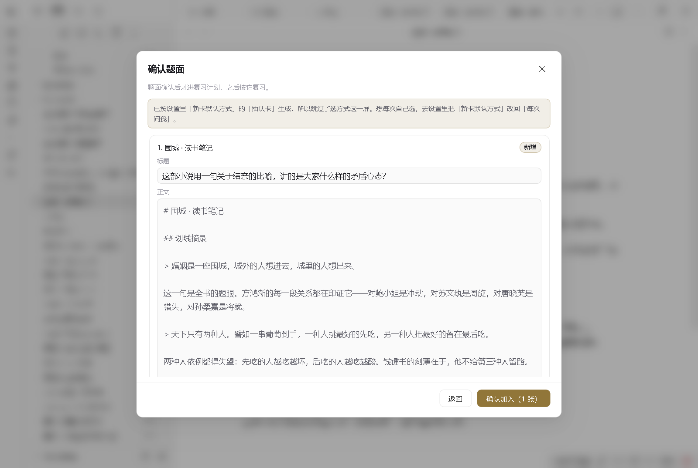
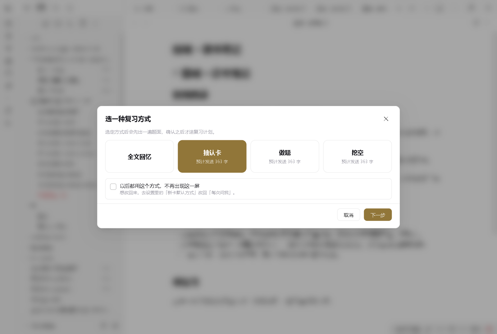
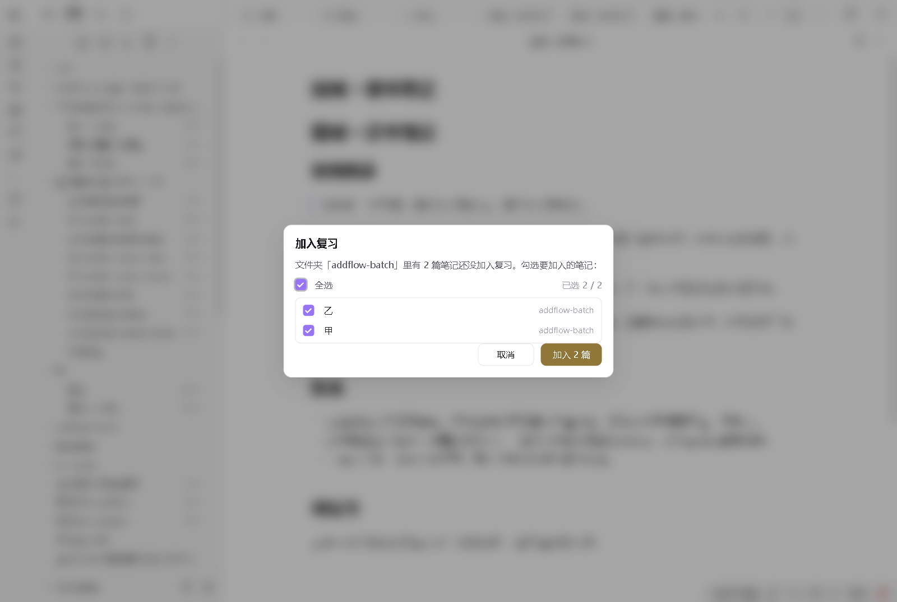
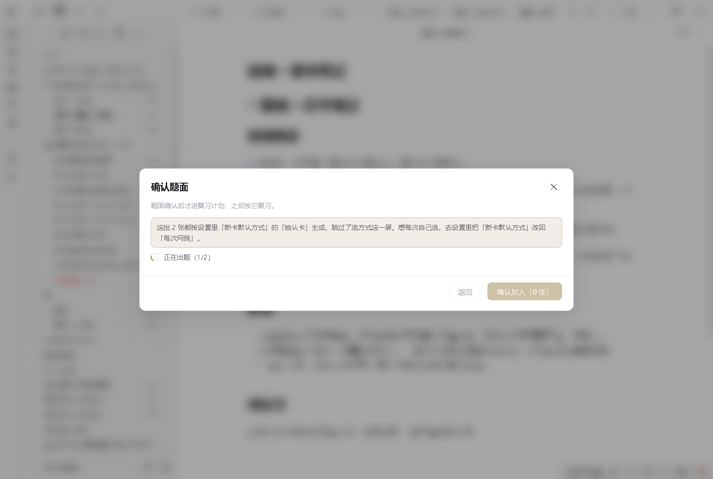
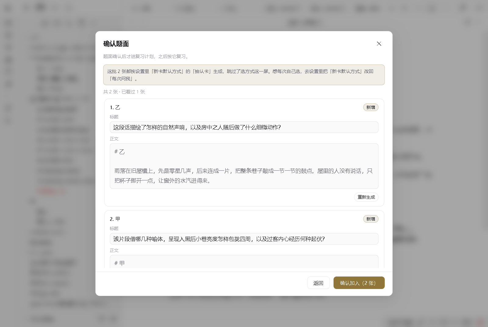
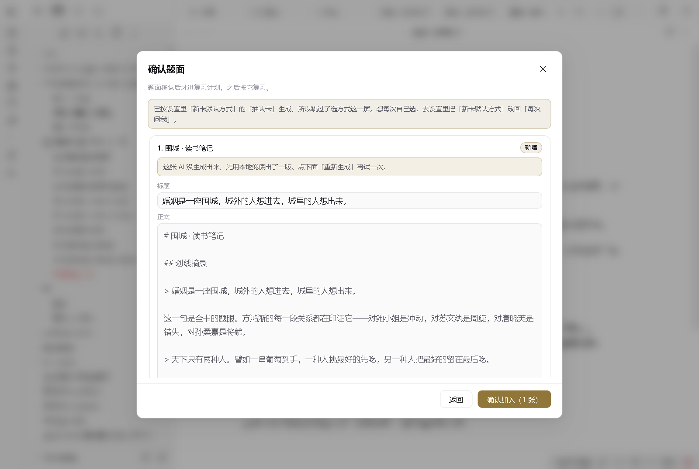
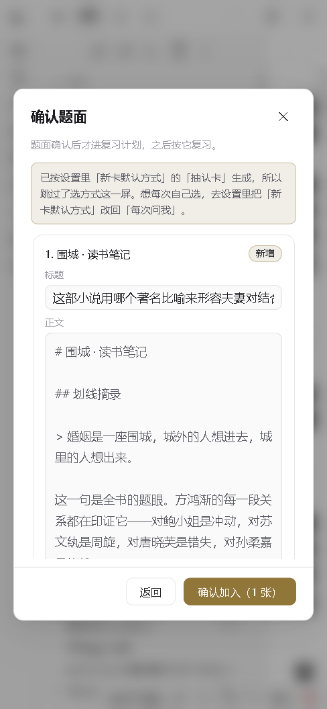

预设方式不再绕流程 · 修正与四项增强
2026-11-21 · 测试库 E:\Obsidian\bz review · 桌面 1280×860 / 移动端 390×844@3x
分支 fix/preset-mode-confirm（worktree bz-review-wt-preset-confirm）· 尚未合并
门禁：review tsc 通过 · 75 文件 / 706 断言全绿 · lint-css 0 error / 0 warning
测试库已还原：32 条、addflow-batch 已删、默认方式回到 manual、AI provider 回到 deepseek
上一版把「不用每次询问」做成了后台直接写库——AI 出的题面用户从头到尾看不到，等于让模型替人做决定。这次改成：预设方式只省掉「选方式」这一屏，题面照样生成、照样停在确认页，取消一个字节不写。
1. 修正：预设方式停在确认页，不再后台入库 通过
「预设方式」现在只等于「不用问你想用哪种方式」，题面照样出、照样停在你面前；点「确认加入」才写库。

命令入口 · 抽认卡预设：直接进「确认题面」，没有「选一种复习方式」那一屏，页顶写明原因
回归：设回「每次问我」，仍旧先问方式（四张方式卡都在，没有预设提示）。

「每次问我」· 方式屏照常出现
2. 增强一：确认页写明「按设置用了哪个方式」 通过
页顶一条浅色说明：已按设置里「新卡默认方式」的「抽认卡」生成，并给出口——想每次自己选，回设置改回「每次问我」。
3. 增强二：批量确认页有审核进度 通过
批量时列表上方多一行「共 N 张 · 已看过 M 张」；只有真的滚到过那张卡才算看过，全看完变「都看过了」。

文件夹入口：先勾选两篇

生成中，页顶是批量口径的说明

出完两张：共 2 张 · 已看过 1 张；底部「确认加入（2 张）」
滚到底再回顶：共 2 张 · 都看过了
关闭窗口后 review.json 仍是 32 条——取消不入库。
4. 增强三：AI 没生成出来时标出来并给重试 通过
模型调用失败时，旧代码静默降级（抽认卡拿原文顶正面、做题出 0 题、挖空用规则兜底）。现在失败的那张卡上会有一条提示，下面本来就有「重新生成」。

把 provider 临时切到 ollama 制造的真实失败：卡上标「这张 AI 没生成出来，先用本地兜底出了一版」
5. 增强四：批量说明「这批都是设置里那个方式生成的」 通过
文案从单张的「已按设置…生成」改成「这批 N 张都按设置里…生成」，让人清楚不是系统替他挑的。截图见第 3 节两张页顶说明。
6. 顺手修：兜底问句不再带 Markdown 符号 通过
AI 失败兜底时，抽认卡正面原来直接拿整篇第一行，变成「# 围城 · 读书笔记 ## 划线摘录 > 婚姻是一座围城…」。现在跳过标题行、去掉引用 / 列表 / 序号符号，取第一段正文——同一场景标题变成「婚姻是一座围城，城外的人想进去，城里的人想出来。」
7. 移动端 通过

390×844@3x：说明块与卡片都在，底部按钮并排可点
8. 改了哪些文件
| 文件 | 改动 |
|---|
src/review/add-flow.ts | 删掉静默入库分支与 silentAdd；交付只走制卡窗 |
src/review/add-flow-model.ts | 删掉只服务静默分支的判定函数 |
src/review/card-wizard.ts | 预设分支只跳选方式并记「预设来源」；批量审核进度；AI 失败标记与提示；返回 / 手选方式时清预设来源 |
src/review/card-wizard-model.ts | 审核进度文案、预设说明文案、兜底问句取行 |
src/review/styles.css | 审核进度一行、失败提示的警示配色 |
| 测试 | 删 3 条旧「静默判定」断言，新增 9 条（接线反断言、审核进度、预设文案、兜底取行） |
9. 风险与遗留 说明
- 批量仍是一次确认：几十篇会串行生成，页面很长；进度只解决「看到哪儿」，不解决「总量大」。
- 没配 AI 时会先弹配置引导：预设方式要 AI；以前静默补不挡人，现在会挡——这是「必须人审」的必然结果。
- 挖空预设多一步：生成的是候选空位，还要点词确认。
- 3 个 jsdom 测试文件起不来：环境既有问题（共享 pnpm store 缺包），与本轮无关。